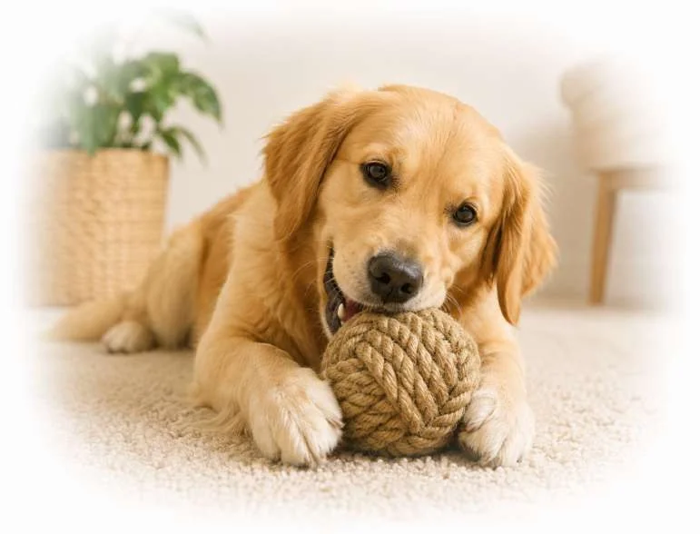
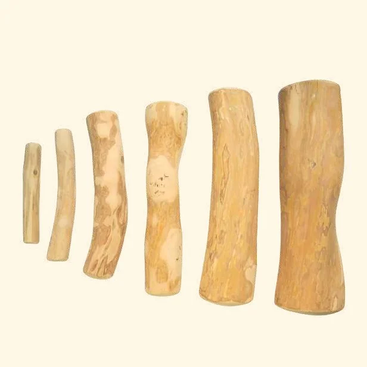

Natural chew toys
Natural Dog Chew Toys: Building a Range That Makes Sense

Short answer: build a natural dog toy range from a few products that each do one job — a thick-cut Gorilla coffee wood chew for strong chewers, a standard coffee wood stick for moderate gnawers, a coconut fiber ball for fetch and carry, and a hemp rope for owner-led tug. Choose two or three sizes of each, approve a physical sample per SKU, and put the use and replacement instructions on every pack.
What a natural dog chew toy is
A natural dog chew toy is a non-edible toy made mainly from plant material — wood, coir, hemp or loofah — rather than rubber, nylon or plastic. It is different from an edible chew such as a treat or rawhide: a wooden stick is a non-food product, even when it sits beside treats on a retail shelf.
A dog that carries a toy around the house and a dog that tries to pull it apart are asking very different things of the same product. That distinction belongs at the beginning of a buying brief. A range built around the word “natural”, without a clear use for each item, leaves store staff and customers to work out the important details themselves.

Give each product a job
| Product | Job in the range | Best for | Key specification |
|---|---|---|---|
| Gorilla coffee wood chew | Long, hard chewing | Strong chewers | Thick-cut; GRLS–GRLXL, 155–900 g |
| Standard coffee wood stick (CC01) | Gnawing | Moderate chewers | XS–XXL by length, diameter and weight |
| Coconut fiber ball | Fetch and carry | Dogs that carry and mouth | Diameter, finished weight, winding, any core |
| Hemp rope toy | Owner-led tug | Interactive play with a person | Length, rope diameter, knots and joins |
| Wood-and-rope combination | Tug plus chew | Dogs that like both | The join between wood and rope |
For a first order, a small number of clearly differentiated products is easier to support than several similar-looking designs. Decide who each item is for, what the owner does during play and when it should be removed.

Building the range, step by step
- Map your customers’ dogs
Action: List the sizes and chewing styles you actually sell to — gnawers, strong chewers, fetchers, tuggers.
Result: A short list of jobs the range must cover. - Pick one product per job
Action: Use the table above; add strong chewers to the Gorilla line rather than stretching the standard stick.
Result: No overlap between SKUs. - Limit the sizes
Action: Two or three sizes per product at launch.
Result: Less stock tied up; clearer shelf advice. - Approve samples
Action: Up to 3 free samples; you cover the courier. Measure and keep one reference per SKU.
Result: A physical standard for every repeat order. - Agree pack and instructions
Action: Pack count, barcode, supervision and replacement advice on every unit.
Result: Staff and customers get the same message. - Review after one season
Action: Sales, questions and returns by SKU and size.
Result: A second order based on data, not on a toughness ranking.

VietPaw chew and toy references
| Line | Sizes | Minimum | Lead time |
|---|---|---|---|
| Coffee wood CC01 | XS, S, M, L, XL, XXL | 50 pcs per size; Trial Box 100 / Starting Box 500 | 5–7 days stock |
| Coffee wood Gorilla | GRLS, GRLM, GRLL, GRLXL | Confirmed in the quote | Confirmed in the quote |
| Coconut fiber dog ball | S / M / L references | Selected lines from 50 pcs | Confirmed in the quote |
| Hemp rope dog toy | Quoted by design | Project-specific | Confirmed in the quote |
| Private label (any line) | — | 500 pcs per SKU | 60–80 days |

The sample needs to answer more than one question
Handle the product before judging the photograph. With wood, compare the narrowest and widest points, surface finish and any crack — any cracked piece should have been removed at grading. With rope or wound fibre, look at knot placement, loose ends and how components are joined. Request the complete material list; a natural outer layer does not identify a hidden core or binding thread.
Keep an approved sample, and put its important features into writing as well. A photograph cannot settle a later disagreement about diameter or weight. Natural grain and shade can vary; an unapproved change in construction is a different matter.

Make the first order teach you something
Record quantities by SKU and size, not only the total number of toys. Agree the pack count, barcode placement and carton marks before production. At receiving, separate manufacturing defects from transit damage and keep the batch reference with each issue.
After launch, review which sizes sell, which questions customers ask and why products are returned. That gives the second order a sounder basis than a broad promise such as “suitable for all dogs”.
Frequently asked
What are natural dog chew toys made of?
Plant materials such as coffee wood, coconut fiber (coir), hemp and loofah, rather than rubber, nylon or plastic.
Are natural chew toys edible?
No. A coffee wood stick or a coir ball is a toy, not food. Pieces and loose fibres should not be swallowed.
Which natural chew is best for a strong chewer?
A thick-cut coffee wood chew from the Gorilla line, in four sizes from GRLS (155–230 g) to GRLXL (550–900 g).
How many products should a first range have?
Usually three to five, each with a distinct job, in two or three sizes each. It is easier to explain and to reorder than a long list.
How do I choose sizes for the range?
Start from the dogs your customers own. For coffee wood, the CC01 table links each size to a reference dog weight; go up one size for keen chewers and use Gorilla for strong chewers.
Can I mix materials in one order?
Yes. Minimums are confirmed per product and size in the quotation, and samples can cover several lines.